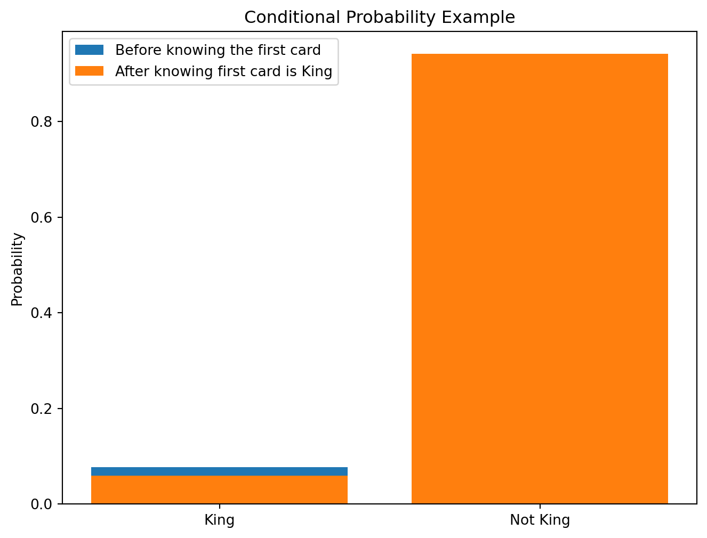
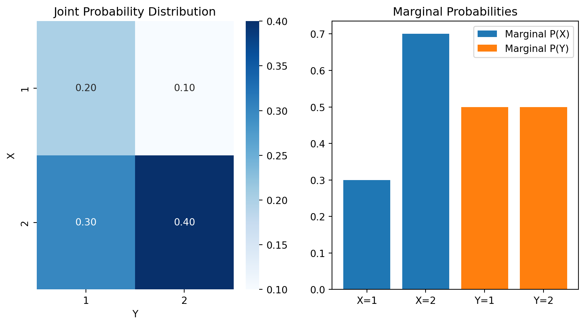
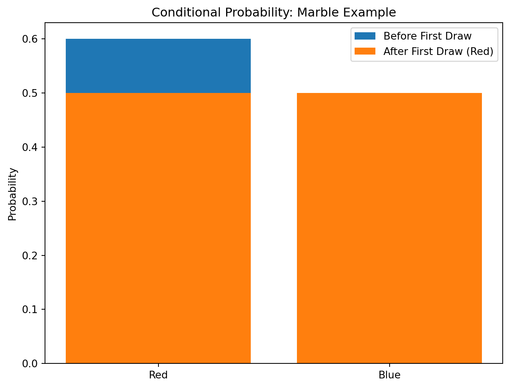
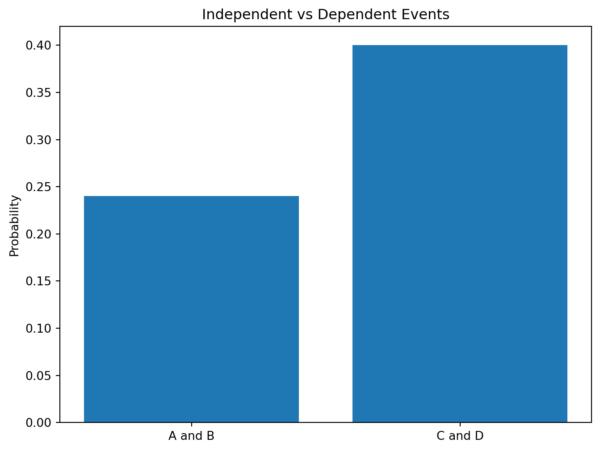
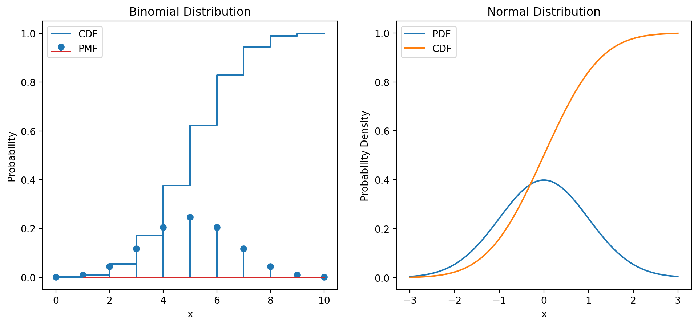
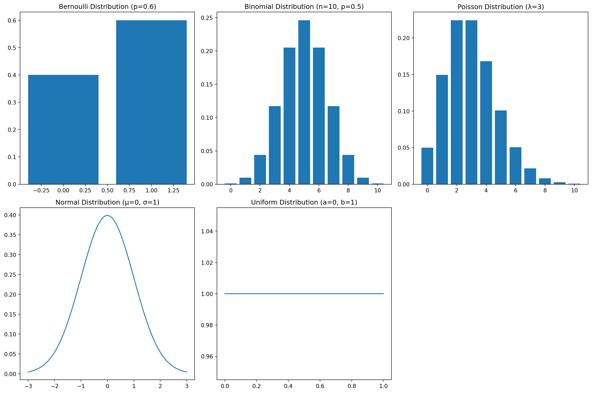

This section lays the groundwork for understanding Bayes’ Theorem by reviewing fundamental concepts in probability theory.
6.0.1 Sample Space and Events
The sample space, often denoted as \(\Omega\) (Omega), represents the set of all possible outcomes of a random experiment. An event is a subset of the sample space. For example, if we roll a six-sided die, the sample space is \(\Omega = \{1, 2, 3, 4, 5, 6\}\). The event “rolling an even number” is the subset \(A = \{2, 4, 6\}\). Another event could be “rolling a number greater than 3”, represented by \(B = \{4, 5, 6\}\).
Events can be combined using set operations:
Union:\(A \cup B\) represents the event that either A or B (or both) occur. In our example, \(A \cup B = \{2, 4, 5, 6\}\).
Intersection:\(A \cap B\) represents the event that both A and B occur. In our example, \(A \cap B = \{4, 6\}\).
Complement:\(A^c\) (or \(A'\)) represents the event that A does not occur. The complement of A is \(A^c = \{1, 3, 5\}\).
6.0.2 Probability Axioms
Probability is a function \(P\) that assigns a number between 0 and 1 to each event in the sample space, satisfying the following axioms:
Non-negativity: For any event A, \(P(A) \ge 0\).
Normalization:\(P(\Omega) = 1\). The probability of the entire sample space is 1.
Additivity: For any two mutually exclusive events A and B (meaning \(A \cap B = \emptyset\), the empty set), \(P(A \cup B) = P(A) + P(B)\). This extends to any finite or countable number of mutually exclusive events.
From these axioms, many important properties can be derived, including:
Conditional probability addresses the probability of an event given that another event has already occurred. The conditional probability of event A given event B is denoted as \(P(A|B)\) and is defined as:
\(P(A|B) = \frac{P(A \cap B)}{P(B)}\)
provided that \(P(B) > 0\). This formula expresses the probability of A occurring, knowing that B has already occurred. The denominator adjusts the probability to reflect the reduced sample space.
For example, consider drawing two cards from a standard deck without replacement. Let A be the event that the second card is a king, and B be the event that the first card is a king. Then \(P(A|B) = \frac{3}{51}\) because given that the first card is a king, there are only 3 kings left out of 51 cards.
import matplotlib.pyplot as plt# Example: visualizing conditional probabilityevents = ['King', 'Not King']probabilities_before = [4/52, 48/52]probabilities_after = [3/51, 48/51]plt.figure(figsize=(8, 6))plt.bar(events, probabilities_before, label='Before knowing the first card')plt.bar(events, probabilities_after, label='After knowing first card is King')plt.ylabel('Probability')plt.title('Conditional Probability Example')plt.legend()plt.show()

6.0.4 The Concept of Independence
Two events A and B are independent if the occurrence of one does not affect the probability of the occurrence of the other. Mathematically, this is expressed as:
\(P(A|B) = P(A)\) or equivalently, \(P(B|A) = P(B)\)
or, most commonly used definition for independence:
\(P(A \cap B) = P(A)P(B)\)
If events are independent, the joint probability is simply the product of their individual probabilities. If they are not independent, they are dependent. The concept of independence is essential in many areas of statistics and probability.
graph LR
A[Event A] -->|P(A|B) = P(A)| B[Event B];
B -->|P(B|A) = P(B)| A;
subgraph Independent Events
style A fill:#ccf,stroke:#000,stroke-width:2px
style B fill:#ccf,stroke:#000,stroke-width:2px
end
6.1 Joint and Marginal Probability
This section delves into joint and marginal probability distributions, essential concepts for understanding Bayes’ Theorem and its applications.
6.1.1 Joint Probability Distributions
A joint probability distribution describes the probability of two or more events occurring together. For discrete random variables \(X\) and \(Y\), the joint probability mass function (PMF) is denoted as \(P(X=x, Y=y)\) or more concisely as \(P(x, y)\). This function gives the probability that \(X\) takes on the value \(x\) and \(Y\) takes on the value \(y\) simultaneously. For continuous random variables, we use the joint probability density function (PDF), denoted as \(f(x, y)\). The joint distribution must satisfy the following conditions:
\(P(x, y) \ge 0\) for all \(x, y\) (or \(f(x, y) \ge 0\))
\(\sum_{x}\sum_{y} P(x, y) = 1\) for discrete variables (or \(\int_{-\infty}^{\infty}\int_{-\infty}^{\infty} f(x, y) \,dx \,dy = 1\) for continuous variables)
The joint distribution contains all the information about the individual variables and their relationship.
6.1.2 Calculating Marginal Probabilities from Joint Distributions
Marginal probabilities represent the probability of a single event occurring, regardless of the outcome of other events. They are obtained by “marginalizing” (summing or integrating) over the other variables in the joint distribution.
For discrete variables:
\(P(X=x) = \sum_{y} P(x, y)\) (Marginal PMF of X)
\(P(Y=y) = \sum_{x} P(x, y)\) (Marginal PMF of Y)
For continuous variables:
\(f(x) = \int_{-\infty}^{\infty} f(x, y) \,dy\) (Marginal PDF of X)
\(f(y) = \int_{-\infty}^{\infty} f(x, y) \,dx\) (Marginal PDF of Y)
6.1.3 Visualizing Joint and Marginal Probabilities
Joint and marginal probabilities can be visualized using various methods. For discrete variables, a joint probability table or a bar chart is often used. For continuous variables, we might use a heatmap or contour plot for the joint distribution, and histograms or density plots for the marginal distributions.
6.1.4 Joint Probability Tables
A joint probability table is a convenient way to represent the joint probability distribution for discrete random variables. Each cell in the table represents the joint probability \(P(x, y)\) for a specific pair of values \((x, y)\). The sums of the rows and columns give the marginal probabilities.
import matplotlib.pyplot as pltimport numpy as npimport pandas as pdimport seaborn as sns# Example: Joint Probability Table and Visualization# Sample data (replace with your own data)data = {'X': [1, 1, 2, 2], 'Y': [1, 2, 1, 2], 'Probability': [0.2, 0.1, 0.3, 0.4]}df = pd.DataFrame(data)joint_prob_table = pd.pivot_table(df, values='Probability', index=['X'], columns=['Y'], aggfunc=np.sum)#Calculating Marginal Probabilitiesmarginal_x = joint_prob_table.sum(axis=1)marginal_y = joint_prob_table.sum(axis=0)print("Joint Probability Table:\n", joint_prob_table)print("\nMarginal Probability of X:\n", marginal_x)print("\nMarginal Probability of Y:\n", marginal_y)# Visualizationplt.figure(figsize=(10, 5))plt.subplot(1, 2, 1)sns.heatmap(joint_prob_table, annot=True, cmap="Blues", fmt=".2f")plt.title("Joint Probability Distribution")plt.subplot(1, 2, 2)plt.bar(['X=1', 'X=2'], marginal_x, label='Marginal P(X)')plt.bar(['Y=1', 'Y=2'], marginal_y, label='Marginal P(Y)')plt.legend()plt.title("Marginal Probabilities")plt.show()
Joint Probability Table:
Y 1 2
X
1 0.2 0.1
2 0.3 0.4
Marginal Probability of X:
X
1 0.3
2 0.7
dtype: float64
Marginal Probability of Y:
Y
1 0.5
2 0.5
dtype: float64
/tmp/ipykernel_2195334/2308017241.py:11: FutureWarning: The provided callable <function sum at 0x7ff1d82349a0> is currently using DataFrameGroupBy.sum. In a future version of pandas, the provided callable will be used directly. To keep current behavior pass the string "sum" instead.
joint_prob_table = pd.pivot_table(df, values='Probability', index=['X'], columns=['Y'], aggfunc=np.sum)

graph LR
A[Joint Probability<br/>P(X,Y)] --> B(Marginal Probability<br/>P(X));
A --> C(Marginal Probability<br/>P(Y));
6.2 Conditional Probability and Bayes’ Theorem (Preview)
This section provides a gentle introduction to conditional probability and offers a preview of Bayes’ Theorem, which will be explored in detail in subsequent chapters.
6.2.1 Understanding Conditional Probability
Conditional probability quantifies the likelihood of an event occurring given that another event has already happened. Recall the definition from the previous section:
\(P(A|B) = \frac{P(A \cap B)}{P(B)}\)
where \(P(A|B)\) is the conditional probability of event A given event B, \(P(A \cap B)\) is the joint probability of both A and B occurring, and \(P(B)\) is the probability of event B. The key insight is that knowing B has occurred changes the sample space, affecting the probability of A.
6.2.2 Bayes’ Theorem: An Intuitive Introduction
Bayes’ Theorem provides a way to update our beliefs about an event based on new evidence. It’s a powerful tool for revising probabilities in light of observed data. In its simplest form, Bayes’ Theorem states:
\(P(A|B) = \frac{P(B|A)P(A)}{P(B)}\)
Here:
\(P(A|B)\) is the posterior probability of A given B (what we want to find).
\(P(B|A)\) is the likelihood of B given A.
\(P(A)\) is the prior probability of A (our initial belief).
\(P(B)\) is the probability of B (evidence).
The denominator, \(P(B)\), can be expanded using the law of total probability (discussed in more detail later):
\(P(B) = P(B|A)P(A) + P(B|A^c)P(A^c)\)
6.2.3 Illustrative Examples of Conditional Probability
Let’s illustrate conditional probability with a simple example. Suppose we have a bag containing 3 red marbles and 2 blue marbles.
Event A: Drawing a red marble.
Event B: Drawing a blue marble.
\(P(A) = \frac{3}{5}\) and \(P(B) = \frac{2}{5}\)
Now, let’s consider drawing two marbles without replacement. What’s the probability of drawing a red marble second, given that the first marble was red? This is \(P(A_2|A_1)\).
There are only 2 red marbles left out of 4 total marbles after drawing one red marble.
import matplotlib.pyplot as plt# Visualizing the Marble Exampleevents = ['Red', 'Blue']probabilities_before = [3/5, 2/5]probabilities_after_red = [2/4, 2/4]plt.figure(figsize=(8, 6))plt.bar(events, probabilities_before, label='Before First Draw')plt.bar(events, probabilities_after_red, label='After First Draw (Red)')plt.ylabel('Probability')plt.title('Conditional Probability: Marble Example')plt.legend()plt.show()

6.2.4 Setting the Stage for Bayes’ Theorem
The examples above highlight the importance of conditional probability. Bayes’ Theorem essentially provides a formal framework for updating our understanding of probabilities given new information. We use prior knowledge (\(P(A)\)) and new evidence (\(P(B|A)\)) to calculate a refined posterior probability (\(P(A|B)\)). The subsequent chapters will look at the application of Bayes’ Theorem in more complex scenarios, and demonstrate its usefulness in various fields.
graph LR
A[Prior Probability P(A)] --> B(Evidence P(B|A));
B --> C[Posterior Probability P(A|B)];
subgraph Bayes' Theorem
style A fill:#ccf,stroke:#000,stroke-width:2px
style B fill:#ccf,stroke:#000,stroke-width:2px
style C fill:#ccf,stroke:#000,stroke-width:2px
end
6.3 Independence of Events
Understanding independence is essential for applying Bayes’ Theorem and for many probability calculations. This section explores the concept of independence in detail.
6.3.1 Definition of Independence
Two events, A and B, are independent if the occurrence of one event does not affect the probability of the occurrence of the other event. Mathematically, this is expressed as:
\(P(A|B) = P(A)\)
or equivalently:
\(P(B|A) = P(B)\)
The most common and useful definition for independence is:
\(P(A \cap B) = P(A)P(B)\)
This means the joint probability of A and B occurring is simply the product of their individual probabilities. If this equation holds, then A and B are independent. If it doesn’t, they are dependent.
6.3.2 Testing for Independence
To test whether two events are independent, we compare the joint probability \(P(A \cap B)\) with the product of the individual probabilities \(P(A)P(B)\). If they are approximately equal (allowing for some margin of error due to sampling variation), we can conclude that the events are likely independent. A statistically rigorous test would involve hypothesis testing, which is beyond the scope of this introductory section.
6.3.3 Conditional Independence
Events A and B are conditionally independent given a third event C if:
\(P(A \cap B | C) = P(A|C)P(B|C)\)
This means that given the knowledge that C has occurred, the occurrence of A doesn’t influence the probability of B and vice versa. Note that conditional independence does not imply (and is not implied by) marginal independence. Events can be independent in one context (given C) but dependent in another.
6.3.4 Consequences of Independence for Probability Calculations
Independence significantly simplifies probability calculations. When events are independent, the joint probability is simply the product of the individual probabilities, as shown above. This makes calculating probabilities of complex events much easier. For example, if we have n independent events \(A_1, A_2, \dots, A_n\), the probability that all of them occur is:
This result extends to more complex scenarios, making it a powerful tool in probability modeling. Conversely, the absence of independence requires more complex calculations involving conditional probabilities and joint distributions.
import matplotlib.pyplot as pltimport numpy as np# Example illustrating independence vs. dependence#Independent Eventsprob_A =0.6prob_B =0.4prob_A_and_B = prob_A * prob_B#Dependent Events (Example)prob_C =0.5prob_D_given_C =0.8#probability of D given C occurredprob_D_and_C = prob_C * prob_D_given_Cevents = ['A and B','C and D']probabilities = [prob_A_and_B, prob_D_and_C]plt.figure(figsize=(8,6))plt.bar(events,probabilities)plt.ylabel('Probability')plt.title('Independent vs Dependent Events')plt.show()print(f"Probability of A and B (independent): {prob_A_and_B}")print(f"Probability of C and D (dependent): {prob_D_and_C}")

Probability of A and B (independent): 0.24
Probability of C and D (dependent): 0.4
graph LR
A[Event A] -.-> B[Event B];
subgraph Independent Events
style A fill:#ccf,stroke:#000,stroke-width:2px
style B fill:#ccf,stroke:#000,stroke-width:2px
linkStyle 0,1,2,3 stroke:#000,stroke-width:2px,stroke-dasharray: 5 5
end
C[Event C] --> D[Event D];
subgraph Dependent Events
style C fill:#ccf,stroke:#000,stroke-width:2px
style D fill:#ccf,stroke:#000,stroke-width:2px
end
6.4 Discrete and Continuous Random Variables
This section distinguishes between discrete and continuous random variables, introducing key concepts for describing their probability distributions.
6.4.1 Discrete Random Variables and Probability Mass Functions
A discrete random variable is a variable whose value can only take on a finite number of values or a countably infinite number of values. The probability distribution of a discrete random variable is described by its probability mass function (PMF), denoted as \(P(X=x)\) or \(p(x)\). This function assigns a probability to each possible value of the variable. The PMF must satisfy:
\(P(X=x) \ge 0\) for all x
\(\sum_{x} P(X=x) = 1\) (The sum of probabilities over all possible values is 1)
For example, the outcome of rolling a fair six-sided die is a discrete random variable. The PMF would be \(P(X=x) = \frac{1}{6}\) for \(x \in \{1, 2, 3, 4, 5, 6\}\).
6.4.2 Continuous Random Variables and Probability Density Functions
A continuous random variable is a variable whose value can take on any value within a given range. The probability distribution of a continuous random variable is described by its probability density function (PDF), denoted as \(f(x)\). Unlike the PMF, the PDF doesn’t directly give the probability of a specific value; instead, the probability of the variable falling within a certain interval is given by the integral of the PDF over that interval:
\(P(a \le X \le b) = \int_{a}^{b} f(x) \,dx\)
The PDF must satisfy:
\(f(x) \ge 0\) for all x
\(\int_{-\infty}^{\infty} f(x) \,dx = 1\)
For example, the height of a randomly selected adult is a continuous random variable.
6.4.3 Cumulative Distribution Functions (CDFs)
The cumulative distribution function (CDF), denoted as \(F(x)\), gives the probability that a random variable X is less than or equal to a given value x. It’s defined for both discrete and continuous random variables:
The CDF is a non-decreasing function, ranging from 0 to 1.
6.4.4 Expected Value and Variance
The expected value (or mean) of a random variable, denoted as \(E[X]\) or \(\mu\), represents the average value of the variable over many repetitions of the experiment.
Discrete:\(E[X] = \sum_{x} x P(X=x)\)
Continuous:\(E[X] = \int_{-\infty}^{\infty} x f(x) \,dx\)
The variance, denoted as \(Var(X)\) or \(\sigma^2\), measures the spread or dispersion of the distribution around the mean. It’s the expected value of the squared difference between the variable and its mean:
\(Var(X) = E[(X - \mu)^2]\)
The standard deviation, \(\sigma = \sqrt{Var(X)}\), is the square root of the variance and has the same units as the random variable.
import numpy as npimport matplotlib.pyplot as pltfrom scipy.stats import binom, norm# Example: Discrete (Binomial) and Continuous (Normal) distributions# Binomial Distribution (Discrete)n =10# Number of trialsp =0.5# Probability of successx = np.arange(0, n +1)pmf = binom.pmf(x, n, p)cdf = binom.cdf(x, n, p)# Normal Distribution (Continuous)mu =0# Meansigma =1# Standard Deviationx_cont = np.linspace(-3, 3, 100)pdf_cont = norm.pdf(x_cont, mu, sigma)cdf_cont = norm.cdf(x_cont, mu, sigma)#Plottingplt.figure(figsize=(12, 5))plt.subplot(1, 2, 1)plt.stem(x, pmf, label='PMF')plt.plot(x, cdf, label='CDF', drawstyle='steps-post')plt.xlabel('x')plt.ylabel('Probability')plt.title('Binomial Distribution')plt.legend()plt.subplot(1, 2, 2)plt.plot(x_cont, pdf_cont, label='PDF')plt.plot(x_cont, cdf_cont, label='CDF')plt.xlabel('x')plt.ylabel('Probability Density')plt.title('Normal Distribution')plt.legend()plt.show()#Expected Value and Variance (Binomial)expected_value = n*pvariance = n*p*(1-p)print("Binomial Distribution:")print(f"Expected Value: {expected_value}")print(f"Variance: {variance}")#Expected Value and Variance (Normal) - parameters are mu and sigmaprint("\nNormal Distribution:")print(f"Expected Value (mu): {mu}")print(f"Variance (sigma^2): {sigma**2}")

Binomial Distribution:
Expected Value: 5.0
Variance: 2.5
Normal Distribution:
Expected Value (mu): 0
Variance (sigma^2): 1
graph LR
A[Discrete Random Variable] --> B(Probability Mass Function (PMF));
C[Continuous Random Variable] --> D(Probability Density Function (PDF));
B --> E(Cumulative Distribution Function (CDF));
D --> E;
E --> F(Expected Value & Variance);
6.5 Common Probability Distributions
This section introduces many commonly encountered probability distributions, highlighting their properties and applications.
6.5.1 Bernoulli Distribution
The Bernoulli distribution models a single trial with two possible outcomes: success (1) or failure (0). The probability of success is denoted by \(p\), and the probability of failure is \(1-p\). The PMF is:
\(P(X=k) = p^k (1-p)^{1-k}\) for \(k \in \{0, 1\}\)
where \(X\) is the Bernoulli random variable.
The expected value is \(E[X] = p\), and the variance is \(Var(X) = p(1-p)\).
6.5.2 Binomial Distribution
The binomial distribution models the number of successes in a fixed number of independent Bernoulli trials. It’s characterized by two parameters: \(n\) (number of trials) and \(p\) (probability of success in each trial). The PMF is:
where \(\binom{n}{k} = \frac{n!}{k!(n-k)!}\) is the binomial coefficient.
The expected value is \(E[X] = np\), and the variance is \(Var(X) = np(1-p)\).
6.5.3 Poisson Distribution
The Poisson distribution models the number of events occurring in a fixed interval of time or space, given a constant average rate of events. It’s characterized by a single parameter, \(\lambda\) (the average rate of events). The PMF is:
The expected value is \(E[X] = \lambda\), and the variance is \(Var(X) = \lambda\).
6.5.4 Normal Distribution
The normal (or Gaussian) distribution is a continuous distribution, symmetric around its mean, and characterized by its mean \(\mu\) and standard deviation \(\sigma\). Its PDF is:
The expected value is \(E[X] = \mu\), and the variance is \(Var(X) = \sigma^2\). The normal distribution is essential in many areas of statistics due to the central limit theorem.
6.5.5 Uniform Distribution
The uniform distribution assigns equal probability to all values within a given range \([a, b]\). Its PDF is:
\(f(x) = \begin{cases} \frac{1}{b-a} & a \le x \le b \\ 0 & \text{otherwise} \end{cases}\)
The expected value is \(E[X] = \frac{a+b}{2}\), and the variance is \(Var(X) = \frac{(b-a)^2}{12}\).
import numpy as npimport matplotlib.pyplot as pltfrom scipy.stats import bernoulli, binom, poisson, norm, uniform# Plotting various distributionsx_bernoulli = [0, 1]x_binom = np.arange(0, 11)x_poisson = np.arange(0, 11)x_normal = np.linspace(-3, 3, 100)x_uniform = np.linspace(0, 1, 100)plt.figure(figsize=(15, 10))plt.subplot(2, 3, 1)plt.bar(x_bernoulli, bernoulli.pmf(x_bernoulli, 0.6))plt.title('Bernoulli Distribution (p=0.6)')plt.subplot(2, 3, 2)plt.bar(x_binom, binom.pmf(x_binom, 10, 0.5))plt.title('Binomial Distribution (n=10, p=0.5)')plt.subplot(2, 3, 3)plt.bar(x_poisson, poisson.pmf(x_poisson, 3))plt.title('Poisson Distribution (λ=3)')plt.subplot(2, 3, 4)plt.plot(x_normal, norm.pdf(x_normal, 0, 1))plt.title('Normal Distribution (μ=0, σ=1)')plt.subplot(2, 3, 5)plt.plot(x_uniform, uniform.pdf(x_uniform, 0, 1))plt.title('Uniform Distribution (a=0, b=1)')plt.tight_layout()plt.show()

graph LR
A[Common Distributions] --> B(Bernoulli);
A --> C(Binomial);
A --> D(Poisson);
A --> E(Normal);
A --> F(Uniform);